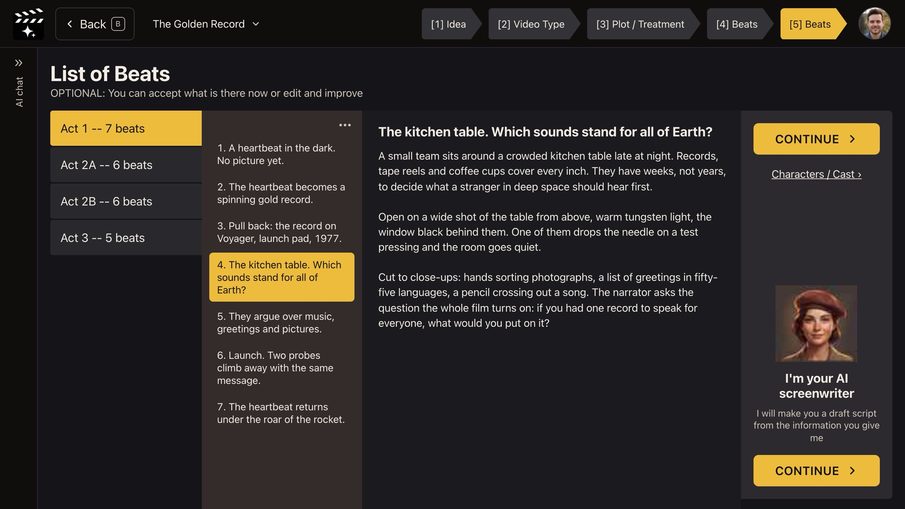

Step 6 of 8
Shape the key beats
A beat is one story moment that changes something, the smallest unit of story. Pick an act, click a beat, and read or edit its write-up. Click CONTINUE › when the beats tell your story.

List of Beats: act, beat, write-up.
What a beat is
A beat is one moment where something changes: a choice, a discovery, a reversal. Scenes are built from beats, and shots from scenes, so the beats you approve here become the backbone of your film.
How the page reads
- Left: each act and how many beats it has (Act 1 -- 7 beats).
- Middle: the beats of that act, numbered in story order.
- Right: the selected beat's write-up: what happens, where, and how it might be shot.
The page says OPTIONAL: You can accept what is there now or edit and improve. Read the beat titles top to bottom first. If they tell your story on their own, the script will too.
Your decision: what to fix before the script is written
Edit a write-up when a beat is wrong in substance: the wrong person, the wrong place, a missing turn. Leave wording polish for later; you can change any line in the Editor after the script exists.
Why you go next to the credit approval
Everything so far is planning and costs little. Writing every scene, the full script and the shot ideas is the large job, so ACT 3 AI asks you to approve it first.